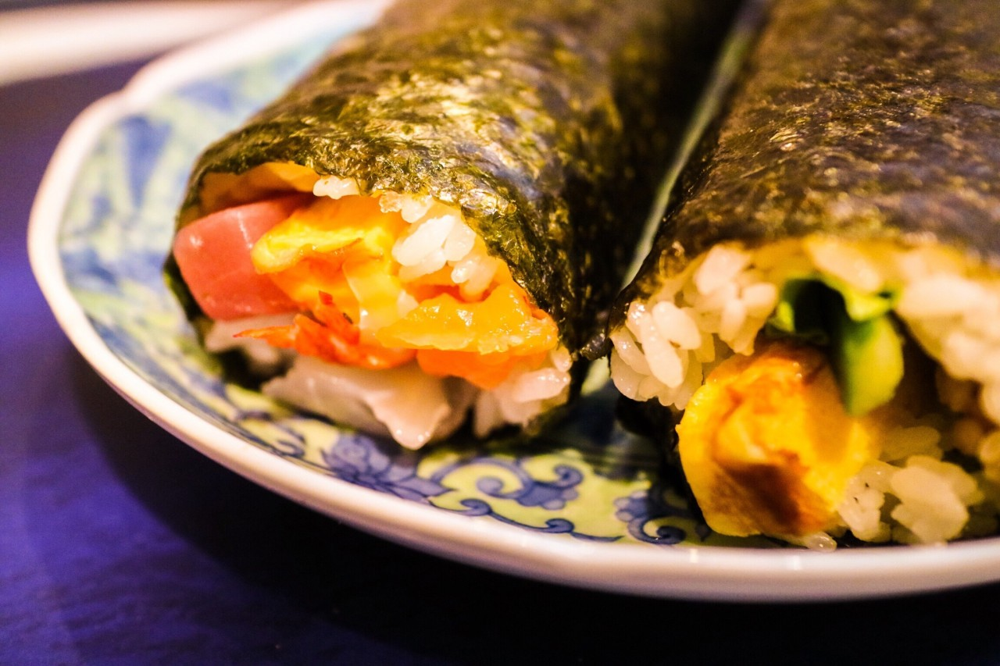

| 2017/02 03 Fri | 斎藤ちはる 恵方巻き |
ちはるーむへようこそ
ツインテールが、思ったよりも
皆さんに好評でびっくりした...！
顔立ち的に似合わないとずっと思っているので
まさか褒めてもらえるとは(> <)♡
とっても嬉しい(﹡ˆ ˆ﹡)
またしようかな☺︎
嬉しくてにやにやしちゃう。。
----------------------------------------♡
今日は節分！
鬼は外〜福は内〜
ということで人生初めて、
恵方巻きを食べました！！
子供の頃から豆まきは欠かさずに
やってきていたのですが
恵方巻きの文化は斎藤家には無く、
20歳の年にして初めまして◎

北北西の方角向いて無言で食べたけど
これ結構大変なのね...！
時間が思ったよりかかってびっくり。
お腹もいっぱいになったよ〜
ちゃんと願い事しながら食べたから
今年こそ叶うといいな。
ちゃんと豆は20個食べたよ！
って打とうとして気付いた...
私まだ19歳じゃん！！
早とちりしすぎてる！！
何で食べてる時気付かなかったの！！
...自分が怖い...
20歳はこんなうっかりを無くせるように頑張る！
----------------------------------------♡
♬ ChihaMusic
「全力少年」スキマスイッチさん
ふいに聞きたくなる、この曲。
小・中学生の頃DSでうたっちっていう
ゲームでずっとこの曲でプレイしてたのを
いま思い出した...！
知ってる人いるかな〜笑
爽やかさと軽快さがクセになる。
"セカイを開くのは僕だ
視界はもう澄み切ってる"
このラストが大好きすぎる。
童心を忘れずに前へ進んでいかなきゃ！
という前向きな気持ちにさせてくれる。
やっぱりいいな〜
昨日の #chihashot の♡の写真を
撮った場所の答えは...
ディズニーシーのマーメイドラグーンでした！！
難しいヒントの中でも
当たってる方もいらっしゃってびっくり。
流石です◎
時間の合間を縫って、この間
愛未と行ってきたのです！
その時の話はまた今度♡
おやすみ
斎藤ちはる